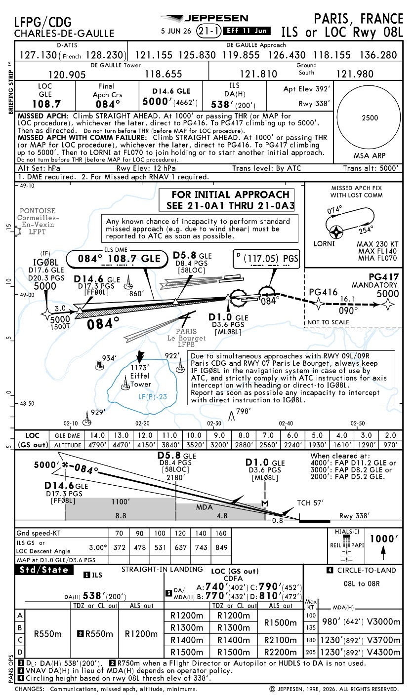
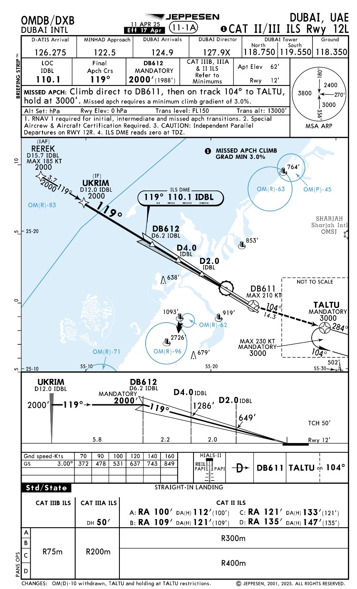

ILS desde cero: CAT I, CAT II y CAT III
Este módulo no presupone conocimientos previos. Cada sigla se explica antes de utilizarse y cada dato de la carta se convierte en una acción concreta de cabina.

El ILS se aprende por capas
París RWY 08L
Carta combinada ILS o LOC: frecuencia, curso, DA(H), MDA(H), DME, luces y frustrada.
Dubái RWY 12L
Carta CAT II/III: RA, DH, RVR, certificación especial y mínimos CAT II, IIIA y IIIB.
¿Qué es un ILS?
ILS significa Instrument Landing System. Es un sistema de aproximación de precisión que proporciona guiado lateral y vertical hacia una pista.
LOC — Localizer
Indica si la aeronave está a la izquierda o a la derecha del eje de aproximación.
GS — Glide Slope
Indica si la aeronave está por encima o por debajo de la senda vertical publicada.
DME y fixes
Permiten identificar puntos como IF, FAP, FAF o MAP.
Aprende las letras antes de leer la carta
Selecciona un término
Aquí aparecerá la explicación completa y su importancia operacional.
El encabezado responde las primeras preguntas
La vista superior y el perfil cuentan historias distintas
Vista en planta
Vista de perfil
Primero localizador; después senda de planeo
Convierte velocidad en razón de descenso aproximada
DA, DH y RA no significan lo mismo
| Término | Nombre | Qué representa | Fuente |
|---|---|---|---|
| DA | Decision Altitude | Altitud barométrica de decisión. | Altímetro barométrico. |
| DH | Decision Height | Altura sobre una referencia para tomar la decisión. | Puede relacionarse con RA. |
| RA | Radio Altitude | Altura sobre el terreno inmediatamente debajo. | Radioaltímetro. |
| DA(H) | Decision Altitude (Height) | Altitud principal y altura entre paréntesis. | París: 538 (200). |
RVR, TDZ, CL, HIALS, REIL y PAPI
Runway Visual Range
Alcance visual de pista.
Touchdown Zone
Zona de toma de contacto y su elevación.
Centerline Lights
Luces del eje de pista.
High Intensity Approach Lighting System
Luces de aproximación de alta intensidad.
Runway End Identifier Lights
Luces que ayudan a identificar el umbral.
Precision Approach Path Indicator
Ayuda visual para la senda en fase visual.
Una carta, dos aproximaciones: ILS o LOC
La categoría no depende solo de la carta
| Categoría | Concepto | Requisitos crecientes |
|---|---|---|
| CAT I | ILS estándar; decisión normalmente alrededor de 200 ft. | Procedimiento, equipo y tripulación aprobados. |
| CAT II | Menor DH y RVR que CAT I. | RA, automatización/HUD, luces y protección de señal. |
| CAT IIIA | DH menor de 100 ft o sin DH, según aprobación. | Autoland o sistema aprobado y mayor redundancia. |
| CAT IIIB | RVR muy bajo y posible capacidad de rollout. | Fail-operational, autoland y autorización completa. |
Cómo leer una carta CAT II/III

Lee primero la columna; después la categoría
La automatización debe comprenderse
Autopilot
Piloto automático.
Flight Director
Director de vuelo.
Head-Up Display
Presentación frontal de guiado.
Aterrizaje automático
Puede controlar aproximación, flare y aterrizaje según certificación.
Tras una falla no produce desviación importante, pero normalmente exige intervención del piloto.
Tras una falla simple, la capacidad restante puede completar la operación según aprobación.
LVO, LVP y áreas críticas del ILS
Low-Visibility Operations
Operaciones bajo condiciones y aprobaciones de baja visibilidad.
Low-Visibility Procedures
Procedimientos aeroportuarios de protección y separación.
ILS Critical Area
Zona donde vehículos o aeronaves pueden distorsionar LOC/GS.
De la autorización al aterrizaje o frustrada
Una falla cambia la capacidad disponible
| Falla | Consecuencia | Respuesta general |
|---|---|---|
| Localizador | Sin guiado lateral ILS. | No continuar el ILS; aplicar SOP y frustrar o usar otro procedimiento. |
| Glide slope | Puede revertir a LOC si existe. | Usar perfil y mínimos LOC. |
| DME requerido | No se identifican fixes. | No continuar salvo sustitución autorizada. |
| Autopilot | Puede perderse CAT II/III. | Aplicar SOP y frustrar si desaparece la capacidad requerida. |
| Radioaltímetro | Puede perderse mínimo RA. | Aplicar degradación AFM/MEL/SOP. |
| Señal inestable | Guiado no fiable. | No perseguir; monitorear y frustrar si corresponde. |
Resuelve antes de ver la respuesta
GS arriba
Falla de GS
CAT III sin aprobación
DA sin referencias
RVR inferior
Anomalía en autoland
Demuestra comprensión, no memoria
1. ¿Qué proporciona el ILS?
2. ¿Qué significa LOC?
3. ¿Cómo se intercepta normalmente el GS?
4. DA(H) 538 (200) significa:
5. ¿Qué suministra RA?
6. RVR significa:
7. En DA sin referencias:
8. Si falla GS y existe LOC autorizado:
9. Para usar CAT III se requiere:
10. Fail-passive significa:
11. LVP sirve para:
12. Durante autoland la tripulación debe:
13. La carta de Dubái exige:
14. HIALS-II es:
FAA AIM, sección ILS; FAA Instrument Procedures Handbook; EASA Easy Access Rules for Air Operations; cartas Jeppesen LFPG RWY 08L y OMDB RWY 12L; AFM/POH, MEL y SOP aplicables.